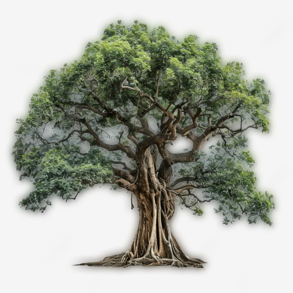
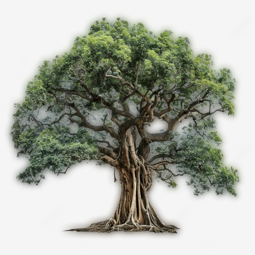
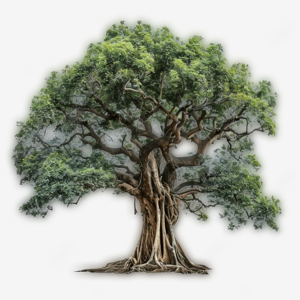

THE GALAXY:
galaxy is a group of stars, clouds of gas, and dust particles
that move together through the universe. There are billions of galaxies
in the universe. They probably formed billions of years ago, soon
after the universe began. The Sun, Earth, and the other planets of the
solar system are part of the Milky Way galaxy.
SOLAR SYSTEM:
solar system, assemblage consisting of the Sun—an average star in the
Milky Way Galaxy—and those bodies orbiting around it: 8 (formerly 9) planets
with more than 210 known planetary satellites (moons); many asteroids, some
with their own satellites; comets and other icy bodies; and vast
reaches of highly tenuous gas ...
SUN:
The solar system consists of the sun, the eight planets and the satellites.
Other than these, there are asteroids, comets, dust, minor planets, and gas.
The Sun, Mercury, Venus, Earth and Mars constitute the inner solar system, and
the asteroid belt lies between the orbit of Mars and Jupiter.
MOON:
The moon can be seen from earth at night and shines brightly amidst the starry
skies. We do not get to see a full moon every night but somewhat in different
phases. The way earth revolves around the sun; the moon revolves around the
earth. It takes around 27 days for the moon to do a complete
orbit around the earth.
EARTH:
Earth is the 3rd planet from the Sun, and it has one Moon. It is the only planet
in our Solar System which is suitable for sustaining life. The composition of the
Earth's surface is 70% water and only 30% land. Water bodies such as oceans,
rivers, lakes, glaciers and seas make up 70% of the water content on Earth
EVOLUTION OF EARTH:
The Earth formed over 4.6 billion years ago out of a mixture of dust and gas
around the young sun. It grew larger thanks to countless collisions between
particles, asteroids, and other growing planets, including one last giant
that threw enough rock, gas, and dust into space to form the moon
NOW EXPLORE THE EARTH
THE WORLD FIRST LIVING ORGANISM:
The first living beings were prokaryotes like bacteria. They were single-celled.
The nucleic acid core consisted of naked DNA. These living beings were present
in the environment of the soupy sea having abundant organic molecules.
SPONGES:
Sponges were among the earliest animals. While chemical compounds from sponges
are preserved in rocks as old as 700 million years, molecular evidence points
to sponges developing even earlier. Oxygen levels in the ocean were still low
compared to today, but sponges are able to tolerate conditions of low oxygen.
AFTER BILLION OF YEAR :
All aquatic animals include fish, lobsters, dolphins, jellyfish, sharks,
sea turtles, starfish, crabs, octopus, whales, seahorses, squid, swordfish,
shrimp, killer whales, manta rays, otters, and oysters.
Invertebrate arthropods:
87
Nearly 4 billion years ago, life was forged on planet earth through the forces of chemistry
and natural selection. Against all odds, on a large rock floating in space, the very first
single-celled organisms began to emerge in our small pocket of the cosmos. Over the course
of a few billion years, life would slowly begin to take shape. And one day, it would evolve
and diversify into the many forms of life present on earth today.
